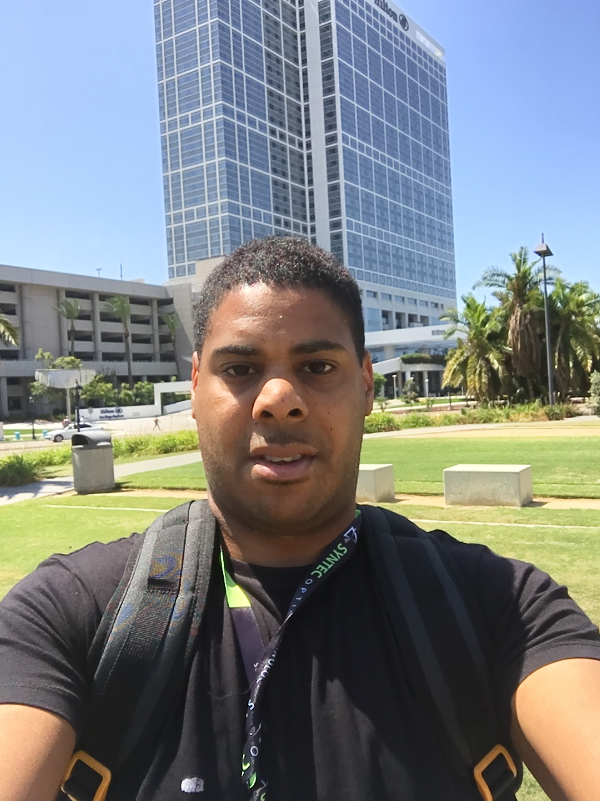

Welcome to My Page
Hi, my name is Andre and I am an enthusiast when it comes to photography and anything related. In fact, my academic and professional background is in imaging. Specifically, X-ray backscatter imaging using coded apertures along with transmission radiography. Coded apertures are a form of 'optics' originally used on space telescopes to image high energy electomagnetic radiation from distant stars and other astronomical sources. Modern advances in science have seen the use of coded apertures for other industries such as medical radioisotope imaging and homeland security.Background
I graduated from Aberystwyth University in Wales with a BSc Hons in Astrophysics. My final year consisted of working on a project studying transient Lunar phenomena (TLP). TLP refer to brief changes occurring on the Lunar surface and the project involved analysing impacting meteoroids. Upon impact, kinetic energy is released as blackbody radiation and a faint flash can be seen from Earth. Flashes typically last for a fraction of a second and are usually detected by a light sensitive video camera. However, cosmic rays from space may strike a camera's CCD, which appear as a false Lunar impact flash event. My main focus was to investigate characteristics of CCD cosmic ray strikes, to reduce uncertainties in genuinely observed TLPs.After my BSc, I completed a PhD in applied physics at Cranfield University as part of the Cranfield Forensic Institute. I worked on a UK government-sponsored classified project, investigating advance methods of X-ray imaging that may be applied to a number of industries (i.e, medical imaging and homeland security). My work consisted of investigating various 'optics' for X-ray imaging systems, which included pinhole masks and coded apertures. Daily activities included rapid prototyping, conducting laboratory experiments involving radiography, signal processing and programming with MATLAB.
Overall, I enjoy most things physics and engineering-related that is hands on. Besides the above, I enjoy photography, videography (i.e, content creating, filmmaking), and cooking. Some examples of my hobbies can be seen below, which I hope one day will turn into a thriving business. !!!Wish me luck!!! hehe.


Vector illustration credit: www.vecteezy.com
Terms & Conditions | Privacy Policy